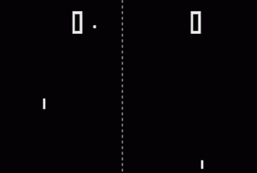
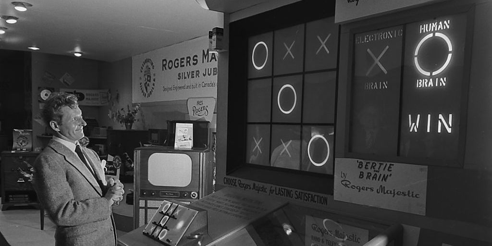

Un videojuego o juego de video es un software o juego electrónico en
el que uno o más jugadores interactúan por medio de diversos
dispositivos (teléfonos, consolas, computadoras), los cuales muestran
imágenes de video. Estos dispositivos, conocidos genéricamente como
«plataforma», puede ser una computadora, una máquina de arcade, una
consola de videojuegos o un dispositivo portátil, como por ejemplo un
teléfono móvil, teléfono inteligente, tableta o una consola de
videojuegos portátil. La industria de los videojuegos es un sector en
constante crecimiento y se ha convertido en una forma de
entretenimiento muy popular a nivel mundial.

Los jugadores interactúan con los videojuegos a través de dispositivos
de entrada a los que se conoce como controladores o mandos. Mediante
estos dispositivos, los jugadores controlan los movimientos y acciones
de los personajes del juego y varía dependiendo de la plataforma. Por
ejemplo, un controlador podría únicamente consistir de un botón y una
palanca de mando o joystick, mientras otro podría presentar una docena
de botones y una o más palancas, lo que llamamos mando. Los primeros
juegos informáticos solían hacer uso de un teclado para llevar a cabo
la interacción, o bien requerían que el usuario adquiriera un mando
con un botón como mínimo. Muchos juegos de computadora modernos
permiten o exigen que el usuario utilice un teclado y un ratón de
forma simultánea.
Historia
Los orígenes del videojuego se remontan a la década de 1950, cuando
poco después de la aparición de las primeras computadoras electrónicas
tras el fin de la Segunda Guerra Mundial, se llevaron a cabo los
primeros intentos por implementar programas de carácter lúdico. Así,
fueron creados el Nimrod (1951) o el Oxo (1952), juegos electrónicos
que aún no pueden ser denominados videojuegos, y el Tennis for Two
(1958) o el Spacewar! (1962), auténticos pioneros del género. Todos
ellos eran todavía prototipos, juegos muy simples y de carácter
experimental que no llegaron a comercializarse, entre otras cosas,
porque funcionaban en unas máquinas que solo estaban disponibles en
universidades o en institutos de investigación.
No sería hasta la década de los 70 en que, con la bajada de los costes
de fabricación, aparecieron las primeras máquinas recreativas y los
primeros videojuegos dirigidos al gran público. Títulos como Computer
Space (1971) o Pong (1972), de Atari, inauguraron las primeras
máquinas recreativas construidas al efecto, que funcionaban con
monedas. Poco después llegarían los videojuegos a los hogares gracias
a las consolas domésticas, la primera de las cuales fue la Magnavox
Odyssey (1972), y más tarde la exitosa Atari 2600 o VCS (de 1977), con
su sistema de cartuchos intercambiables. Por aquel entonces las
máquinas de arcade empezaron a hacerse comunes en bares y salones
recreativos, una expansión debida en parte a un matamarcianos que
alcanzó gran popularidad, el Space Invaders (1978). Otros juegos que
marcaron esta primera época fueron Galaxian (1979), Asteroids (1979) o
Pac-Man (1980).

Dispositivos
Los distintos tipos de dispositivo en los que se ejecutan los
videojuegos se conocen como plataformas. Los cuatro tipos de
plataformas más populares son la PC, las videoconsolas, los
dispositivos portátiles y las máquinas de arcade.
Videoconsolas
Las videoconsolas o consolas de videojuegos son aparatos electrónicos
domésticos destinados exclusivamente a reproducir videojuegos. Creadas
por diversas empresas desde los años 70, han generado un inmenso
negocio de trascendencia histórica en la industria del
entretenimiento. La videoconsola por antonomasia es un aparato de
sobremesa que se conecta a un televisor para la visualización de sus
imágenes, pero existen también modelos de bolsillo con pantalla
incluida, conocidos como videoconsolas portátiles.
Ordenador
El PC u computador personal es también una plataforma de videojuegos,
pero como su función no es solo ejecutar videojuegos, no se considera
como videoconsola. La PC no entra en ninguna generación, ya que cada
pocos meses salen nuevas piezas que modifican sus prestaciones. La PC
por regla general puede ser mucho más potente que cualquier consola
del mercado. Las más potentes soportan modos gráficos con resoluciones
y efectos de postprocesamiento gráfico muy superiores a cualquier
consola.
Máquinas recreativas
Las máquinas recreativas de videojuegos están disponibles en lugares
públicos de diversión, centros comerciales, restaurantes, bares, o
salones recreativos especializados. En los años 1980 y 90 del siglo
pasado disfrutaron de un alto grado de popularidad al ser entonces el
tipo de plataforma más avanzado técnicamente. Los progresos
tecnológicos en las plataformas domésticas han supuesto a comienzos
del siglo XXI una cierta decadencia en el uso de las máquinas arcade.
Videoconsolas portátiles
Las videoconsolas portátiles y otros aparatos de bolsillo cuentan con
la capacidad para reproducir videojuegos. Entre estos últimos destacan
hoy en día los teléfonos celulares (en particular los teléfonos
inteligentes) que, sin ser los videojuegos su función primaria, los
han ido incorporando a medida que se han ido incrementando sus
prestaciones técnicas. Otros dispositivos portátiles de creciente
popularidad en los últimos años son las tabletas.